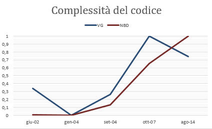
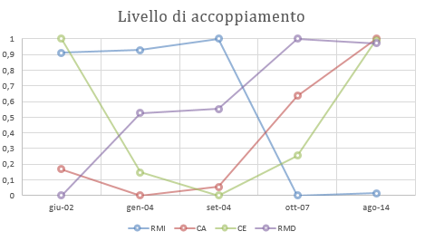

Complessità del codice
Le metriche utilizzate sono state le seguenti:
- VG: complessità ciclomatica di McCabe;
- NBD: nested block depth;
I risultati sono rappresentati in figura.

Livello di accoppiamento
Le metriche utilizzate sono state le seguenti:
I risultati sono rappresentati in figura.

Livello di coesione
Le metriche scelte sono le seguenti:
- A: astrazione;
- NORM: numero di metodi sovrascitti;
- DIT: profondità di una gerarchia.
I risultati sono rappresentati in figura.
Analisi di metriche Open Source
I valori delle metriche ottenuti si riferiscono all'intero progetto e non sono suddivisi per release.
Le metriche analizzate sono le seguenti:
- Numero medio di major release per anno: 0,417;
- Indice dei bug chiusi (numero di bug chiusi/numero di totale di bug): 0,81;
- Indice di altre richieste soddisfatte (n° di richieste soddisfatte/n° totale di richieste): 0,81;
- Numero medio di thread per anno: 132,08;
- Numero di forum: 1;
- Numero di FAQ:
- Numero di download per release fino alla data attuale (2016/01/11):
- 06/06/2002: 1,106;
- 06/01/2004: 5,296;
- 19/09/2004: 7,229;
- 08/10/2007: 15,832;
- 19/08/2014: 11,995.